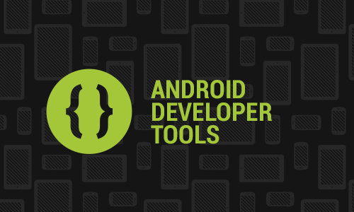
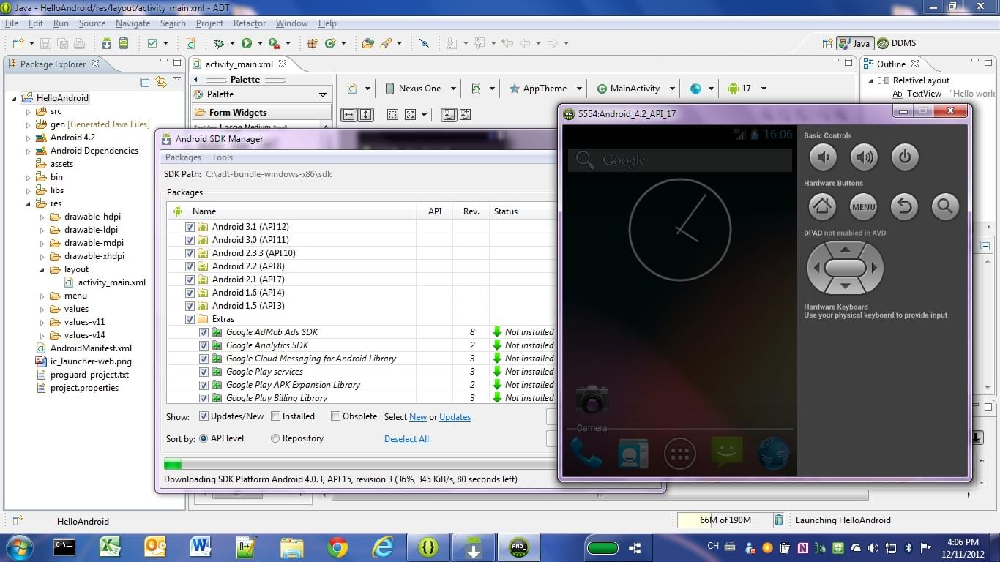
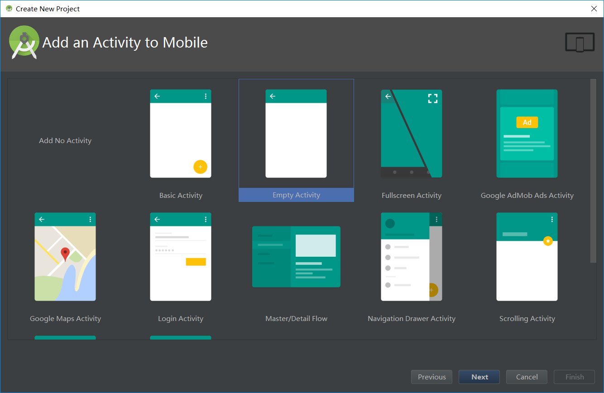
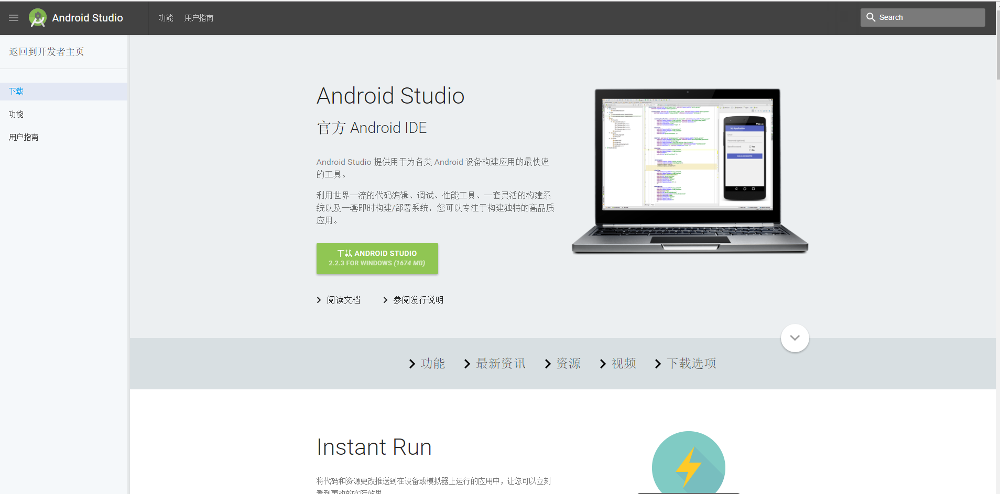

开发利器之Android Studio
为什么选择 Android Studio？
- 官方支持：Google 官方 IDE，第一时间支持新特性（如 Jetpack、Compose）。
- 强大调试：内置 Layout Inspector、Profiler、APK 分析器。
- 智能提示：基于 IntelliJ，代码补全、重构、错误检查极佳。
- Gradle 集成：灵活构建、依赖管理、多渠道打包。
- 模拟器快：HAXM 加速，性能接近真机。
必备插件推荐
- ADB Idea：一键清理/重启 App。
- GsonFormat：JSON 快速生成 Java Bean。
- CodeGlance：右侧代码缩略图。
- Markdown Support：完美支持
.md文件预览。
提升效率的快捷键
| 功能 | 快捷键（Windows） |
|---|---|
| 查找类 | Ctrl + N |
| 查找文件 | Ctrl + Shift + N |
| 重构重命名 | Shift + F6 |
| 生成 Getter/Setter | Alt + Insert |
| 快速修复 | Alt + Enter |
小技巧
- 使用
TODO注释，可在 TODO 面板集中管理。 Log.d(TAG, "...")中的 TAG 可用getClass().getSimpleName()自动生成。- 多个设备同时调试：点击设备下拉菜单选择。
初识Android之体验篇
还记得最初接触Android是在我大二的时候，那时下学期刚开学，每逢开学季学校的移动电信营业厅都会做各种促销活动，新款的手机当然也包括在内。当时我就有听说过Android手机有好多炫酷的操作和功能，能很方便的听音乐，看电影什么的，所以我果断打算买一个新手机，华为c8812电信版。
相对于之前使用过的电阻屏的手机来说，这种电容屏的手机操作起来，感觉简直太棒了，再加上新的Android 4.0系统，界面也相对的更加鲜艳亮丽，后来了解到这个版本叫Ice Cream Sandwich（冰淇淋三明治），这个手机可以拍照、3G上网、下软件、听音乐、看电影、玩游戏，几乎原来电脑上可以干的，手机都可以做到，而且更方便。可以说当时对Android的印象都是来自于对手机的体验，虽然当时的手机市场还是苹果占据主要地位，但是iPhone的价格还是太贵，对于我来说，并没有那么多钱去买，而Android手机价格亲民，也能满足我的基本需求，这点我就很满意了，对于这个客观事实，我也就自然而然的选择了Android阵营，对它充满了好奇，想知道为什么我点了一个图标，就可以打开一个界面，图片、声音都可以展现出来；为什么有时候会有对话框提示，通知消息；为什么我手机用久了就会卡卡的，好多关于Android的疑问。
走进Android之开发篇
在大一的时候，学了两学期的C语言编程，也算是打下了编程的基础，不过是面向过程的。自我感觉对于C语言前面的基础内容还是挺容易的，不过等到了后面的指针章节，我基本就听不太懂了，再加上后面学的数据结构，那更是听的云里雾里，脑袋一片空白，甚至也学着同学一起逃课（现在想想是多么无知）。在我感觉到烦恼和迷惑的时候，我开始接触到Java，这种面向对象的编程语言，为我带来了一片崭新的天地，一切都可以通过现实生活中的例子来类比，理解Java的特性。通过对Java的学习，了解到了我之前的那些疑惑，在这里都可以得到答案，于是我认真的在Java上面花费了很多心思，当时学Java使用的编辑器是Eclipse，在对Java了解了很多基本知识后，开始想着用这门语言来开发，学校是有开设JSP和Java EE的课程，不过我学归学，但是不是很感兴趣，因为我心里还是想找到我对Android的那些疑问的答案，于是我开始自学Android，网上搜索了很多资料，说到学习一项技术，最先开始的就是环境的搭建，就相当于种树得有土壤一样。由于当时有用Eclipse开发Java项目，所以对这个编辑器的使用还是挺熟练的，用它来开发Android，只需要添加开发Android所要用到的ADT插件就可以了，另外一个是Android的SDK，当时用的版本还是14（现在都25了，哈哈）。对于怎么配置，网上一堆教程，当时也是按照教程一步步来，搞了好久才配置成功（心累。。。），好在当时还是可以下载到google 发布的ADT bundle的Eclipse编辑器，稍微方便了我们开发。当时对用ADT Eclipse开发Android项目的印象就是环境配置麻烦，不过使用起来还行，网上的资料也全都是如何用它来编写Android项目，如何配置SDK Manager来下载API，就这样一直使用到了API 19。
这是它的编辑器界面（还记得它吗？）
可以运行在模拟器上（比较耗内存），也可以通过USB运行到手机上（不过adb-tools有时候会失灵，得kill后在start）
第一个应用毫无疑问是“Hello world”，不过我改成了“Hello Android”，哈哈，第一次通过编辑器自动生成的项目，在手机上跑了一遍，顺利的出现的界面，当时就感觉我之前的疑惑，找到了答案。
Android开发之Google篇
Google自从2005年，仅花费5000万美元就低调地收购了Android公司之后，Google的这次收购无疑是最为成功的一次收购，Android从此拥有了一个好爹。Android作为Google的儿子，想必Google也觉得怎么着也要给儿子一个好的礼物，Android Studio应运而生。
经过Google公司的不懈奋斗，目前已发布了2.2.3版本。
我最初用的还是去年7月份的时候，那时候还只是1.5版本，发展速度之快，超乎想象。
这是Android Studio的界面。
关于它的官方介绍请戳这里：https://developer.android.google.cn/studio/index.html

眼尖的同学可能注意到了，这个链接的域名是google.cn，是的，你没看错，12月8日Google的Android developer等的中国网站正式发布，详情请戳http://www.cnbeta.com/articles/565447.htm
这对深受官方资料需要翻墙才能获取的中国Android开发人员来说，是相当苦恼的，现在好了，妈妈再也不用担心我学不到官方文档了（之前一直是花钱买的vpn）。
Android Studio我觉得是最好用的编辑器，因为我能感受到Google这种大公司的用心，我随便就可以列举一些好用的地方：
安装简单，官网上直接就可以下载，linux 、mac os、windows都有，感觉再也不用寄人篱下了，开发Android的我们终于有了归属感。
漂亮的界面，论颜值，之前的根本就不能比，开发的心情都好很多。
用Gradle方式管理项目，添加库简单到只需一句compile，编译速度虽然长被吐槽，但是现在的改善也是有目共睹的。
同样继承了Eclipse插件的使用方式，它也有插件，而且添加更加方便。
可以直接下载查看Google开发的samples，文档是一方面，源码更是不错的一方面。
直接连接firebase，添加服务只需三步就搞定。
更直观的Logcat界面，可以让你更好的分析应用。
编程的快感，一开始不熟悉默认的快捷键，想过调成Eclipse的，不过还是坚持去熟悉默认的快捷键，现在用下来，感觉就像飞一样。
这几点还是很少的一部分，东西好不好用，光自己说了不算，大家大部分人的意见才是关键。从现在的我差不多快忘记了怎么用Eclipse来开发的状态想，大家想必也是一样，经常听身边的朋友说“现在还用Eclipse开发Android，你也太out了吧”，哈哈，估计你们也听过。
总结
谈了这么多我的感想，不知道你是否也有某些共同的记忆，总之我想说Android Studio，最好用的Android编辑器，没有之一。
从 Eclipse 迁移？别犹豫了，Android Studio 是未来！
拥抱它，你的开发效率会翻倍。
 wechat
wechat alipay
alipay